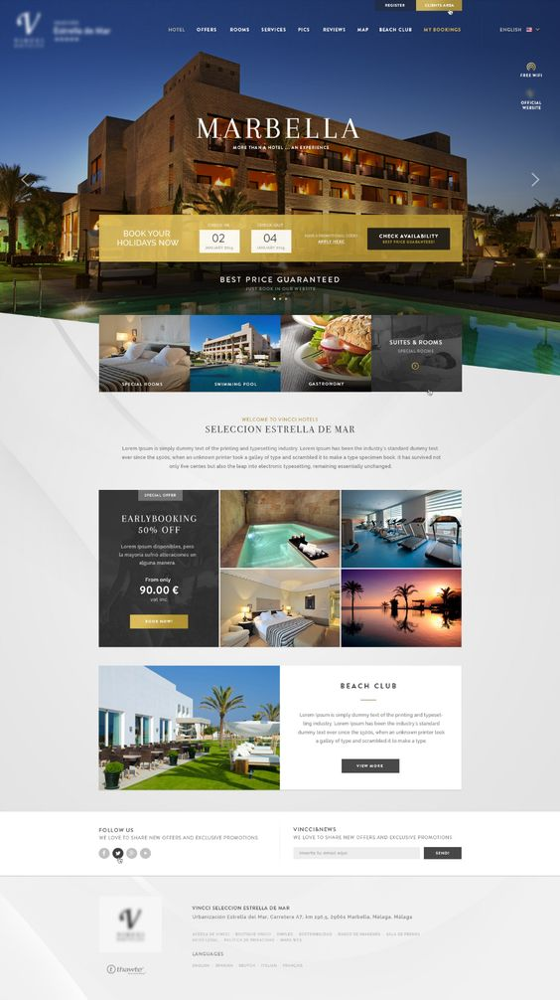
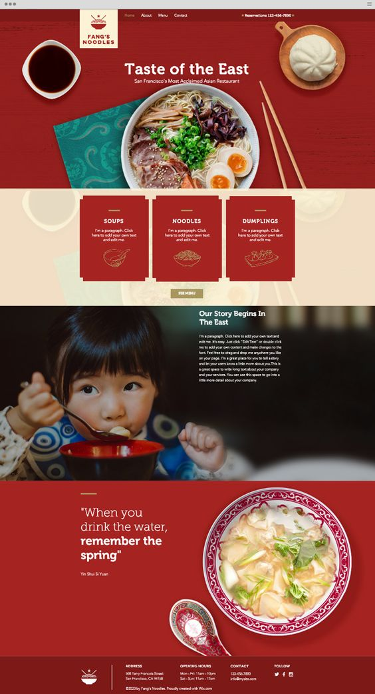
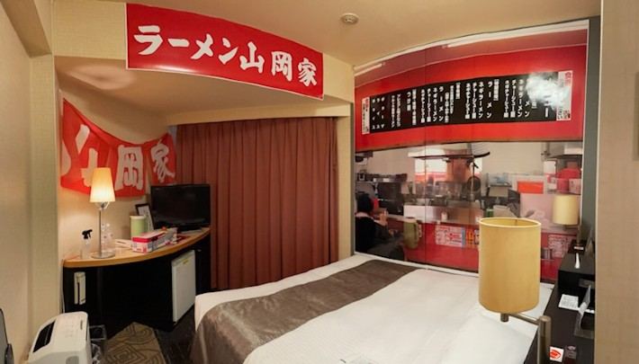
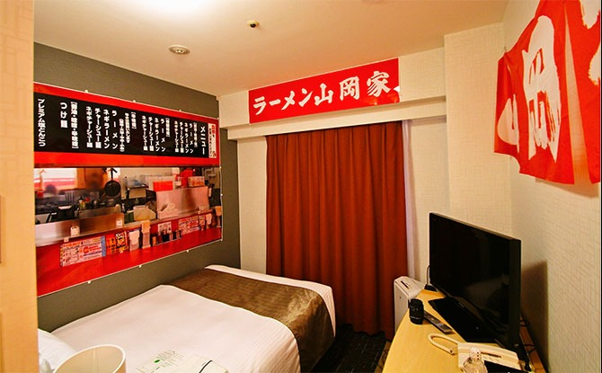
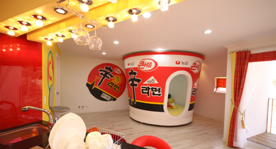
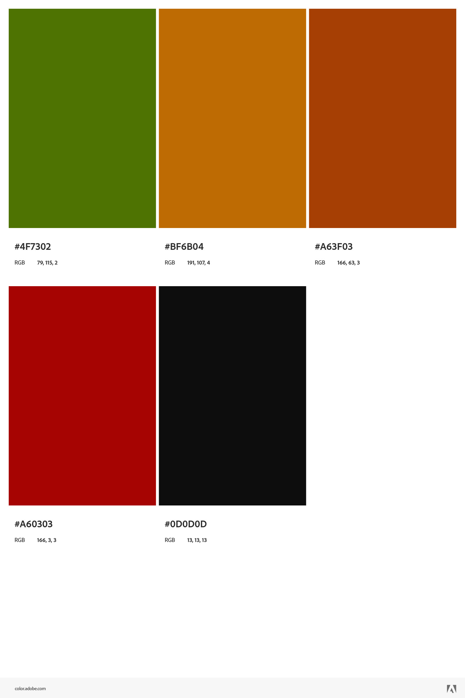
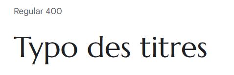
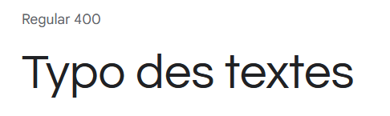
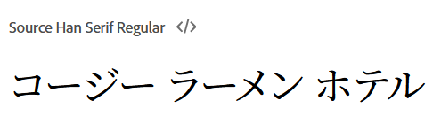

Nom
Cozy Ramen Hotel | コージー ラーメン ホテル
Thème
Hotel avec chambres thématiques de nouilles japonaises.
Inspiration
Nous nous sommes inspiré de sites hotelliers classiques avec une touche d'accent japonais traditionnel.
Éléments conservés
La disposition du site ci-dessous serait conservée en partie, ainsi que le style asiatique de la seconde image.  Les chambres ressembleraient beaucoup à celle-ci avec des thématiques "Ramen" comme :
- Tonkotsu ramen
- Miso Ramen
- Shoyu Ramen
- Shio Ramen
- Tsukemen
- Wakayama Ramen
- Abura Soba
- Asahikawa Ramen
Nous voulons garder l'élément "fun" des chambres ci-dessous, mais accentuer l'aspect haut-de-gamme de celles-ci. Nous aurons donc besoin de photos/vidéos d'une certaine qualité, de les optimiser pour le web, afin d'attirer la clientèle.
  Éléments retirés
On veut que le site soit intuitif et concis, donc les textes ne seront qu'essentiels au besoin du site sans extravangence. On ne veut pas trop de sections qui seraient inutiles.
Identité visuelle
Le logo
Généré sur Looka et retravaillé sur Illustrator
La palette de couleurs
Inspiration japonaise sur Adobe Color
Les typographies
Logo : California Sunshine Typef
Titres : Marcellus
Textes : Questrial
Contenu Japonais : Source Han Serif Japanese
